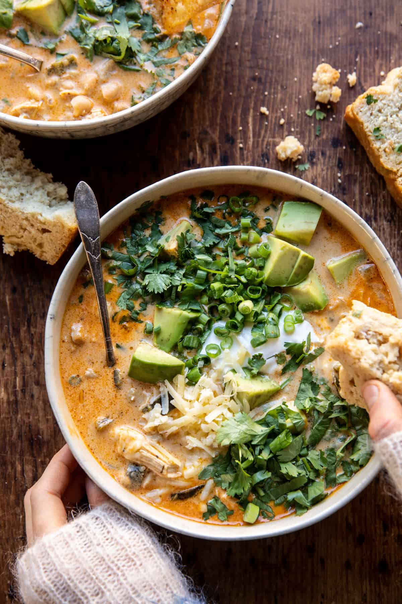

Creamy White Chicken Chili

Description
This simple one pot Creamy White Chicken Chili is the perfect bowl to warm up to on a cold fall/winter day. Made with poblano peppers, jalapeños (for just the right amount of heat), and shredded chicken. It's spicy, creamy and so delicious. Top each bowl of chili with plenty of cheddar cheese, fresh cilantro, and avocado too. Great on its own, but even better with a side of homemade beer bread.
Ingredients
- 2 tablespoons extra virgin olive oil
- 1 medium yellow onion, chopped
- 4 cloves garlic, minced or grated
- 2 poblano peppers, seeded and chopped
- 1 jalapeño, seeded, if desired and chopped
- 2 teaspoons ground cumin
- 1 teaspoon smoked paprika
- 1/2 teaspoon chili powder
- kosher salt and black pepper
- 1 pound boneless, skinless, chicken breasts or thighs
- 4-6 cups low-sodium chicken broth
- 4 ounces cream cheese, at room temperature
- 1 can white beans, drained
- 1/2 cup salsa verde
- 1 cup shredded cheddar cheese
- 1/2 cup fresh cilantro, chopped
- avocado, cheddar cheese, and yogurt, for serving
- lime zest and juice, for serving
Instructions
Stove
- Heat the olive oil in a large pot over medium heat. Add the onion and cook until fragrant, about 5 minutes. Stir in the garlic, poblano peppers, cumin, paprika, chili powder, and a pinch each of salt and pepper. Cook 5-10 minutes, until very fragrant. Add the chicken, then stir in 4 cups broth. Season with more salt and pepper. Partially cover and simmer over medium-low heat for 20 minutes, until the chicken is cooked through.
- Melt the cream cheese in the microwave for 10-15 seconds.
- Pull the chicken out and shred using 2 forks. Stir in the cream cheese until smooth, then stir in the shredded chicken, white beans, salsa verde, and cheddar cheese. Cook 5-10 minutes, until the cheese is melted. Remove from the heat and stir in the cilantro. If needed, thin with additional broth.
- Ladle the chili into bowls. Top, as desired, with yogurt/sour cream, cheese, avocado, cilantro, and green onions. Zest lime over each bowl. Eat and enjoy!
Slow Cooker
- In the bowl of your crockpot, combine the onion, garlic, poblano peppers, cumin, paprika, and chili powder. Add the chicken, then stir in 4 cups broth and cream cheese. Season with salt and pepper.
- Cover and cook on low for 6-7 hours or high for 4-5 hours.
- Shred the chicken using two forks. Stir in the white beans, salsa verde, cheddar, and cilantro.
- Ladle the chili into bowls. Top, as desired, with yogurt/sour cream, cheese, avocado, cilantro, and green onions. Zest lime over each bowl. Eat and enjoy!
Information:
- Author: Tieghan Gerard
- Prep Time: 15 minutes
- Cook TIme: 30 minutes
- Total Time: 45 minutes
- Servings: 6
- Calories Per Servings: 547 kcal